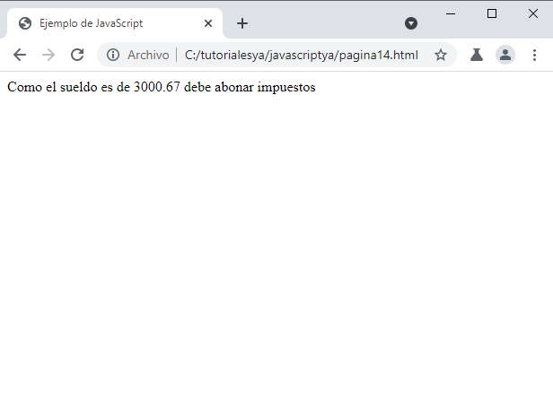

Listado completo de tutoriales
Estructuras condicionales simples. |
No todos los problemas pueden resolverse empleando estructuras secuenciales. Cuando hay que tomar una decisión aparecen las estructuras condicionales.
En nuestra vida diaria se nos presentan situaciones donde debemos decidir.
¿Elijo la carrera A o la carrera B ?
¿Me pongo este pantalón ?
¿Entro al sitio A o al sitio B ?
Para ir al trabajo, ¿elijo el camino A o el camino B ?
Al cursar una carrera, ¿elijo el turno mañana, tarde o noche ?
Por supuesto que en un problema se combinan estructuras secuenciales y condicionales.
Cuando se presenta la elección tenemos la opción de realizar una actividad o no realizarla.
En una estructura CONDICIONAL SIMPLE por el camino del verdadero hay actividades y por el camino del falso no hay actividades. Por el camino del verdadero pueden existir varias operaciones, entradas y salidas, inclusive ya veremos que puede haber otras estructuras condicionales.
Ejemplo: Realizar la carga de una nota de un alumno. Mostrar un mensaje que aprobó si tiene una nota mayor o igual a 4:
<!DOCTYPE html>
<html>
<head>
<title>Ejemplo de JavaScript</title>
<meta charset="UTF-8">
</head>
<body>
<script>
let nombre;
let nota;
nombre = prompt('Ingrese nombre:');
nota = parseInt(prompt('Ingrese su nota:'));
if (nota >= 4) {
document.write(nombre + ' esta aprobado con un ' + nota);
}
</script>
</body>
</html>
Aparece la instrucción if en el lenguaje JavaScript. La condición debe ir entre paréntesis. Si la condición se verifica verdadera se ejecuta todas las instrucciones que se encuentran encerradas entre las llaves de apertura y cerrado seguidas al if.
Para disponer condiciones en un if podemos utilizar alguno de los siguientes operadores relacionales:
> mayor >= mayor o igual < menor <= menor o igual != distinto == igual
Siempre debemos tener en cuenta que en la condición del if deben intervenir una variable un operador relacional y otra variable o valor fijo.
Como queremos que en la variable 'nota' se guarde como entero lo convertimos llamando a parseInt (esta es la forma más concisa de almacenar como entero el valor ingresado con prompt):
nota = parseInt(prompt('Ingrese su nota:'));
Otra cosa que hemos incorporado es el operador + para cadenas de caracteres:
document.write(nombre+' esta aprobado con un '+nota);
Con esto hacemos más corto la cantidad de líneas de nuestro programa, recordemos que veníamos haciéndolo de la siguiente forma:
document.write(nombre);
document.write(' esta aprobado con un ');
document.write(nota);
Ejemplo: Se ingresa por teclado el sueldo de un empleado (se puede ingresar un valor con decimales), si el sueldo supera los 3000 pesos, luego mostrar un mensaje indicando que debe abonar impuestas.
<!DOCTYPE html>
<html>
<head>
<title>Ejemplo de JavaScript</title>
<meta charset="UTF-8">
</head>
<body>
<script>
let sueldo;
sueldo = parseFloat(prompt('Ingrese el sueldo del empleado:'));
if (sueldo >= 3000) {
document.write('Como el sueldo es de ' + sueldo + ' debe abonar impuestos');
}
</script>
</body>
</html>
Si ingresamos por teclado el sueldo: 3000.67 luego se muestra el mensaje debido que la condición del if se verifica verdadera:
Para convertir un string que nos retorna prompt debemos utilizar la función parseFloat:
sueldo = parseFloat(prompt('Ingrese el sueldo del empleado:', ''));
Para resumir tener en cuenta que si queremos guardar el dato retornado por prompt como cadena utilizamos la sintaxis:
nombre = prompt('Ingrese el nombre:')
Si queremos guardarlo como entero:
edad = parseInt(prompt('Ingrese los años:'))
y finalmente si queremos que se guarde en la variable como valor flotante con coma:
sueldo = parseFloat(prompt('Ingrese el sueldo del empleado:'));